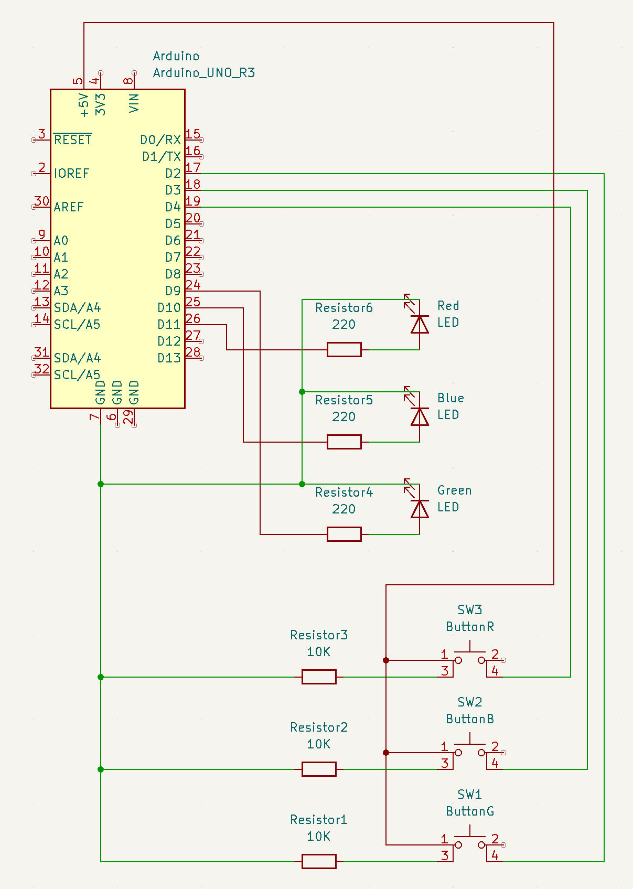

Richard's Assignment 2!

Here is all the documentation for assignment 2!

Calculations: The button uses a 10K resistor. The Arduino output is 5V, and we desire a 20mA current
across the circuit. V = IR, where V = 5, I = 20mA, and R = unknown resistor value. The Red and Green LED
has a voltage drop of 1.8V and the blue LED has a voltage drop of 3.4V.
R = V / I
R = (5 - 1.8) / 0.02 = 160 (Green and Red LEDs)
R = (5-3.4) / 0.02 = 80 (Blue LED)
I have chosen to use a 220 ohm resistor for all 3 LEDs as it will keep the current in the circuit under the
recommended amount, allowing the LEDs to not go 💥💥💥
Breadboard setup.
Code for this LED fading pattern.
const int buttonG = 2; // pin for button that controls the green LED
const int buttonB = 3; // pin for button that controls the blue LED
const int buttonR = 4; // pin for button that controls the red LED
const int ledG = 9; // pin for the green LED
const int ledB = 10; // pin for the blue LED
const int ledR = 11; // pin for the red LED
const int fadingDelay = 50; // universal fading delay timer
int buttonGState = 0; // button state for green button
int buttonBState = 0; // button state for blue button
int buttonRState = 0; // button state for red button
boolean fadingGState = false; // fading state for green button
boolean fadingBState = false; // fading state for green button
boolean fadingRState = false; // fading state for green button
void setup() {
pinMode(ledG, OUTPUT); // enable green LED
pinMode(ledB, OUTPUT); // enable blue LED
pinMode(ledR, OUTPUT); // enable red LED
pinMode(buttonG, INPUT); // enable green button
pinMode(buttonB, INPUT); // enable blue button
pinMode(buttonR, INPUT); // enable red button
}
void loop() {
buttonGState = digitalRead(buttonG); // read the button inputs
buttonBState = digitalRead(buttonB); // ''
buttonRState = digitalRead(buttonR); // ''
/* Conditionals for the GREEN LED and GREEN button. If the button is pushed and the LED is not fading to zero, a for loop will make the
LED light up slowly. If the button is pushed and the LED is in the fading state, the LED will slowly fade to dim.
Changing the none zero value in the for loop conditional will change how bright the LED will light up to, and changing
the interval for i changes the light up or fading speed. */
if (buttonGState == HIGH) {
if (fadingGState == false) {
for (int i = 0; i <= 50; i += 2.5) {
analogWrite(ledG, i);
delay(fadingDelay);
}
}
else if (fadingGState == true) {
for (int i = 50; i >= 0; i -= 2.5) {
analogWrite(ledG, i);
delay(fadingDelay);
}
}
fadingGState = !fadingGState; // Saves the fading state to the next after button press
}
/* Conditionals for the BlUE LED and BLUE button. Behaves the same as the conditional above. */
if (buttonBState == HIGH) {
if (fadingBState == false) {
for (int i = 0; i <= 50; i += 2.5) {
analogWrite(ledB, i);
delay(fadingDelay);
}
}
else if (fadingBState == true) {
for (int i = 50; i >= 0; i -= 2.5) {
analogWrite(ledB, i);
delay(fadingDelay);
}
}
fadingBState = !fadingBState; // Saves the fading state to the next after button press
}
/* Conditionals for the RED LED and RED button. Behaves the same as the conditional above. */
if (buttonRState == HIGH) {
if (fadingRState == false) {
for (int i = 0; i <= 50; i += 2.5) {
analogWrite(ledR, i);
delay(fadingDelay);
}
}
else if (fadingRState == true) {
for (int i = 50; i >= 0; i -= 2.5) {
analogWrite(ledR, i);
delay(fadingDelay);
}
}
fadingRState = !fadingRState; // Saves the fading state to the next after button press
}
}